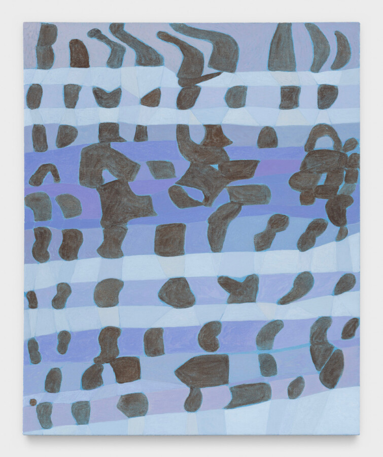

Carrie Gundersdorf: Junonia
4th Ward Project Space is pleased to present Junonia, an exhibition of new paintings by Carrie Gundersdorf. Collectively, these works translate the patterns of seashells into expanded fields of color and mark, bringing together close observation and material process.
Each piece begins with a specific shell’s pattern, which serves as the compositional framework for painterly investigation. Gundersdorf engages these patterns as metaphors for time, growth, and impermanence, while deliberately preserving evidence of process—test swatches, revisions, and layered decisions—within the finished works. The images that emerge move between notation and image, intimacy and scale.
In dialogue with traditions of natural history illustration and early modern abstraction, these works consider how sustained looking can function as a method of recording and remembering. Junonia reflects the artist’s ongoing research into how material surfaces register the conditions of their making, echoing the physical and temporal histories embedded in the shells that inspire them.
Contemporary Art in Chicago, IL; and Drew University in Madison, NJ. Her work has also been featured in group shows at 106 Green in New York, NY; Mills College Art Museum in Oakland, CA; La Box in Bourges, France; and Gallery 400 at UIC in IL, among others. Gundersdorf is the recipient of the 2025 Adolph and Esther Support Grant. She has also received the Artadia Award and the Bingham Fellowship to study at the Skowhegan School of Painting and Sculpture. Gundersdorf’s work has been reviewed in Art Review, Artforum, Artnet, Art on Paper, Chicago Tribune, and Time Out Chicago. She earned her B.A. from Connecticut College and her M.F.A. from the School of the Art Institute of Chicago. She currently lives and works in Brooklyn, NY.
Image: Flea Cone, front, 2025, 22 x 18 inches, oil on canvas, (image by JSP Photography).